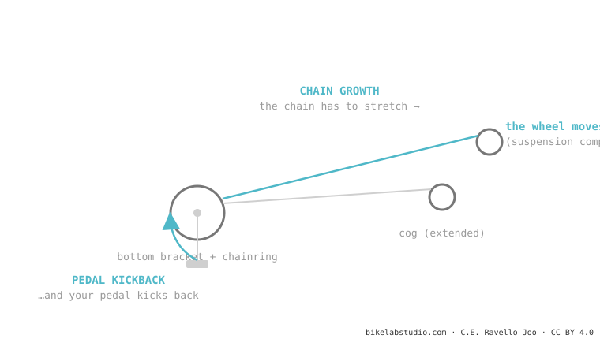

When the suspension compresses, the rear axle moves away from the bottom bracket and the chain has to stretch: that's chain growth. Since the chain is fixed to the cog, that stretch pulls the cranks backward and gives you a tug on your feet: pedal kickback. A little is necessary (it generates anti-squat); too much is annoying. Bikes with a strongly rearward axle path use an idler pulley to neutralize it.
Ever felt a little "tug" at the pedals when riding through a hard bump without pedaling? You're not crazy and your bike isn't broken. It has a name and a cause.
Imagine a rope tied to two posts. If you move the posts apart, the rope tightens and pulls on both. Your chain does the same when the wheel moves away from the bottom bracket.

1. Chain growth: as the suspension compresses, the distance between the chainring and the cog grows. The chain needs more length than it has. 2. The chain pulls: since it's meshed on the cassette, that stretch is transmitted to the chainring. 3. Pedal kickback: the chainring rotates a touch backward and, with it, your cranks and your feet. On an isolated bump it's a tap; in a very rough section with your feet planted, it's annoying and can even slow the suspension down.
Bikes with a strongly rearward axle path (high-pivot) swallow hits incredibly, but they generate a ton of chain growth. So your feet don't get hammered, they fit an idler pulley near the pivot: it reroutes the chain so the stretch doesn't reach the pedals. It's the price (friction + weight + noise) of being able to float over the rough stuff.
The backward tug of the cranks when the suspension stretches the chain over a bump. It's caused by chain growth.
In the right amount, no: it generates the anti-squat that makes you pedal firm. The problem is the excess, which produces annoying kickback.
Tell us when they show up and on which bike; we'll tell you whether it's design kickback or something to check. Message us on WhatsApp